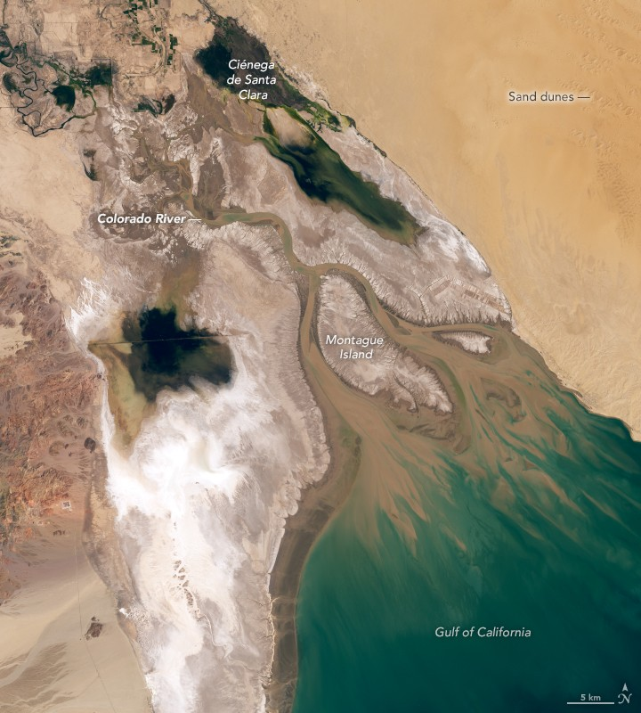
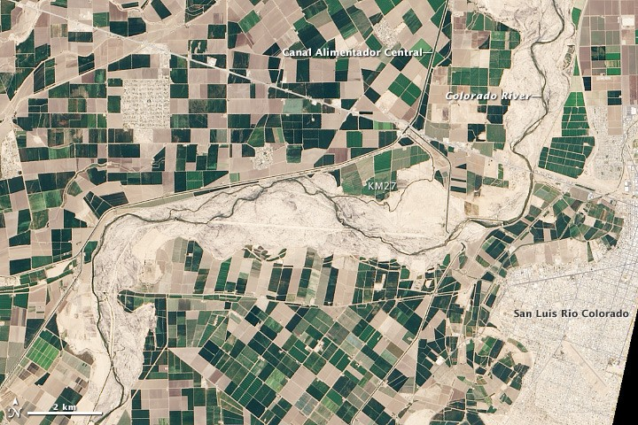

Take a breath, and look at where a river ends

For millions of years the Colorado carried the Rocky Mountains to the sea here, and spent them on a wetland. One of the great desert oases of the world. In 1922, the same year seven states divided its water on paper, a young Aldo Leopold canoed these channels and wrote of green lagoons. The photograph shows what is left: salt flat, dune, a tidal channel meeting a sea the river no longer reaches.
People lived with this river long before there was paper to divide it; thirty tribal nations hold rights and history in the basin today. Forty million people drink from it, and most never see it.
What follows is the river's story in four dimensions: space and time, past and future. The past is a record. The future has levers.
scroll ⌄
This is the river
The Colorado drains a quarter-million square miles of the American West and northern Mexico. Forty million people and five and a half million acres of farmland depend on it.
It no longer reaches the sea.
scroll ⌄
Born in snow
Most of the river begins as snowpack in the Rockies and the Wind River Range. The Green and the mainstem carry it south through the canyon country.
15.2 million acre-feet a year flowed past Lees Ferry on average in the twentieth century. Since 2000: 12.4.
[skeleton: snowpack figure goes here]
Who drinks it
The canals drawn on the map are real: the Central Arizona Project lifting water to Phoenix, the All-American and Coachella feeding the Imperial and Coachella valleys. Cities take some. But follow the widths:
So "half the river goes to cattle feed" is true of the water humans take, and a third of everything the basin consumes. Both numbers are real. Arguments happen when people quote one and hear the other.
One more distinction the cattle arguments miss: the conservation case for cows is about rain-fed rangeland, which draws almost nothing from the river. This water grows irrigated feed. Same animal, two different water stories.
Paper water
The timeline below is following your scroll. Watch the river's actual flow arrive year by year, and watch the promises get drawn on top of it.
The 1922 negotiators sampled a wet run of years. The promises never fit the river that came after.
Spending the savings
The reservoirs papered over the gap: when promises exceed flow, you drain storage. The system peaks near 50 million acre-feet in the 1980s. Then 2000 arrives.
Twenty-six years later the savings account is three-quarters empty, and the rules that managed the decline have expired.
The future forks
Past the seam this is no longer record, it is arithmetic — and now the arithmetic is yours. Set the river, choose the rule, decide how much cattle-feed irrigation to retire. The map shows each party's delivery; scroll onward to replay the future you configured.
about these levers: what the sliders gloss over
Cattle feed. Alfalfa is the desert's shock absorber: the one big crop that can pause mid-season without killing a planting, and it fills rotation gaps and marginal fields other crops cannot use. It rides multiple cuttings a year in heat that would ruin hay elsewhere, and the dairies and feedlots downstream of it are businesses, not abstractions. Fallowing rents the water back for a season. Permanent retirement buys the community: Crowley County, Colorado sold its canal shares in the 1970s and 80s, irrigated acres fell from more than 50,000 to about 2,500, and it never recovered.
Other crops. Much of the remaining third of mainstem irrigation is winter vegetables and perennial plantings. Yuma and Imperial grow most of the winter greens on American and Canadian plates (Richter et al. 2024); vegetables return roughly $1,000–3,000 per acre-foot against alfalfa's $170–450, and an orchard cannot be fallowed without killing it. This lever cuts the highest-value, least flexible water.
Cities. The 40% ceiling reflects what deep conservation programs have plausibly reached; beyond it you are not saving water, you are moving people. Urban water is also the most expensive water to replace.
Prices: federal forbearance programs paid $330–418 per acre-foot in 2023–24 (Reclamation / UCRC); crop revenue per acre-foot from Pacific Institute and Univ. of Arizona figures. Not yet modeled: return flows, groundwater substitution, hysteresis of farm communities. Sources ship with the model.
Seniority here is a party-level stylization (CAP's 1968 juniority, cuts stacking AZ → NV → Mexico → CA); real law works on individual rights. Retiring feed irrigation is modeled as a plain demand cut — no hysteresis, prices, or return-flow mechanics yet.
Deeper play: the spine · the instrument ·
One green spring

In the spring of 2014 the two countries opened a gate at Morelos Dam and let 105,000 acre-feet go. Less than one percent of one year's paper promises. The water crossed a bed that had been dry for years, and for the first time in thirteen of them the Colorado touched the sea. Where the pulse passed, satellites measured the desert greening by more than forty percent.
The delta is not gone. It is dormant, and it answers water. That is worth sitting with for a moment: the river's largest wound responds to a rounding error in the basin's arithmetic, whenever people decide to spend it there.
Fork the river
The rules that ration this river made sense once. First in time, first in right let strangers invest along a desert river before there were courts to referee them. The rules outlived their world, and nobody had to act in bad faith for that to happen. Institutions are evolved things. They fossilize while the climate moves.
The new framework guarantees this argument reruns every two years from now on, with real water at stake each time. So the useful thing to bring is not one more opinion. It is a shared place to check the arithmetic, and you have been holding one: every number here traces to Reclamation's gauges, the Richter accounting, and an open ledger, and every future you build is a link.
Send your future to whoever you were arguing with. Tell us where the model is wrong; it is built to be corrected. Futures stay open as long as someone is still thinking about them.